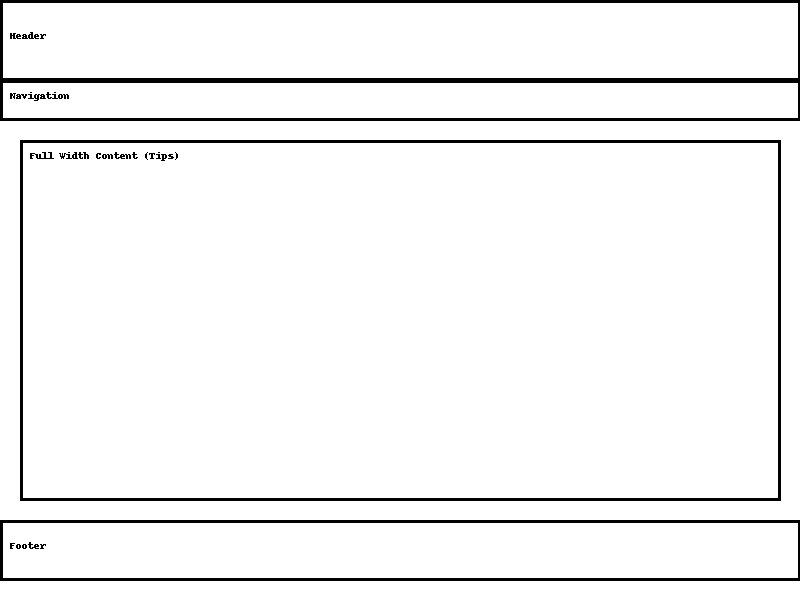
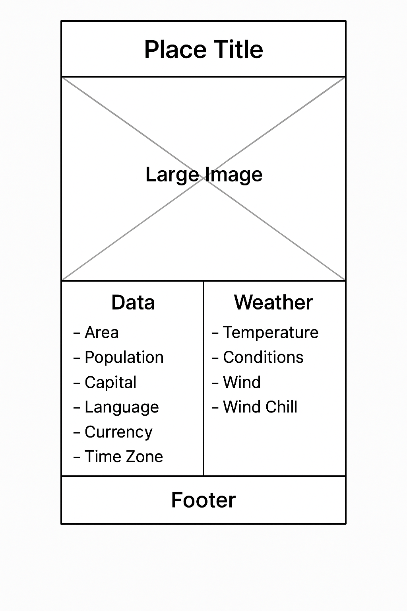

1. Site Name
Wander Japan & World
2. Site Purpose
This site is a travel blog that shares beautiful destinations in Japan and around the world, along with useful travel tips. The goal is to inspire readers and help them plan their trips effectively.
3. Scenarios
- "What are the top recommended tourist spots in Tokyo?"
- "What should I pack for my first international trip?"
4. Color Scheme
#0077b6 (Main Color)#90e0ef (Accent)
#ffffff (Background)
#333333 (Text)
5. Typography
Heading Font: Poppins
Body Font: Roboto
6. Wireframes
Homepage Wireframe:
Travel Tips Page Wireframe:
